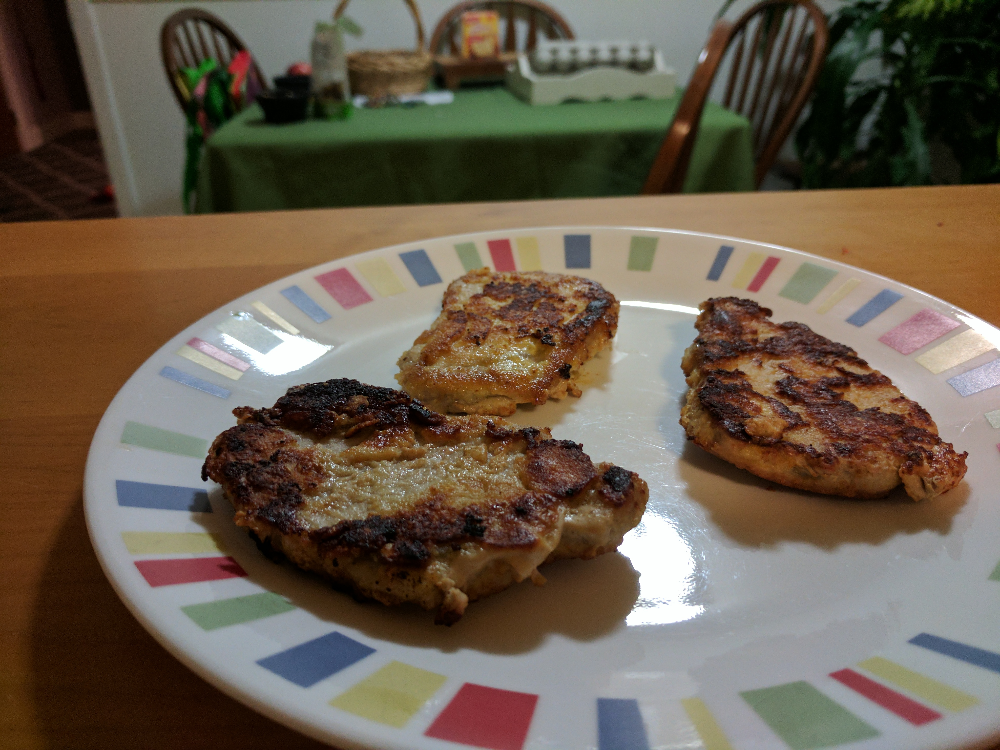

Parmesan Encrusted Pork
Ingredients
- 3 eggs
- 1 tablespoon of water or milk
- 2 cups of parmesan cheese
- 1 package of pork cutlets
- 1 tablespoon of cooking oil
How to cook
- Preheat your pan to medium. Once hot add oil.
- Beat the eggs and add water or milk.
- Pour the parmesan cheese out evenly on a plate next to the eggs.
- Remove a tenderloin from the package, dip it in the egg mixture, cover it in parmesan cheese and place in your pan.
- Repeat until all of the tenderloins are cooking or your pan is full.
- Cook for around 5 minutes on each side, or until golden brown on the outside and there is no pink in the middle.

- 
If you have never cooked meat before, there are many important factors in order to cook it safely. Make sure you wash your hands and any surfaces the meat may have touched thoroughly, and make sure you cook the meat to a safe temperature.
Have any questions or comments about this recipe? Contact us.